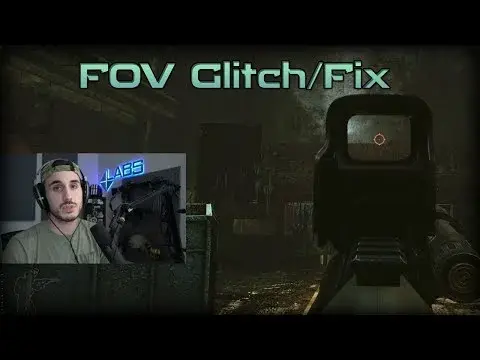

Fontaine's FOV Fix
- Downloads
- 340,725
- Favourites
- 145
- Mod lists
- 234
FOV Fix
Have you seen this video?

I did that, but as a mod. Features:
- ADS will no longer change your FOV by default.
- Choose how much your FOV increases/decreases when you ADS instead.
- Adjust the camera position relative to optics.
- Adjust the speed of camera movement.
- Adjust camera-weapon position/offset (also called HUD FOV).
- Advanced options like FOV scale.
- Also includes toggleable zoom (like ARMA/DayZ)!
Optional Zoom Toggle Zoom Keybind:
Weapon/Camera Offset (OPTIONAL):

Preview (Screenshots are taken with Geff’s Scope Overhaul @ max FOV):
With Amand’s Graphics Weapon DOF and Geff’s Scope Overhaul:
Recommended Mods:
I recommend the following mods in combination with this:
Installation, Config And Settings:
To install, extract the .rar into your SPT directory, or make sure that the FOVFix.dll is in your BepinEx/plugins folder. Make sure the Fontaine-FOV-Fix folder is in your user/mods folder. Server module does not currently exist for version 3.0.0.
To open the config menu, press F12 while in-game. There are tooltips explaining the settings. Click anywhere outside of the menu to close it.
Sensitivity:
If you have DISABLED Variable Zoom, then go to the mod’s server folder (user/mods), open the config in a text editor and set the “disable_sens_changes” option to true.
If you are using Variable Zoom you MUST use the sensitivity changes, otherwise the ADS sens across different optics will be very inconsistent.
To adjust how much magnification reduces ADS sensitivity, adjust the sensitivity modifiers per magnification level.
Alternatively you can disable the manual adjustments and use the automatic adjustments. For automatic adjustments ONLY, you can LOWER the Mouse Sensitivity Reduction Factor, but a value of around 90 will be right for most users if you also raise your aiming mouse sensitivity. So if the mouse sensitivity overall feels too low, then simply raise your aiming sensitivity in the game options.
For reference, I use 1500 DPI, 0.3 non-ADS mouse sens, 0.5 mouse sens, and I use the manual sensitivity adjustments with default settings.
If you still struggle with the sensitivity, then just use the manual option “Use Preset Sensitivity Reduction” and adjust it per magnification level.
FOV:
Adjust the “Base Scope FOV” value till 1x magnification looks like 1x to you. For reference, a Base Scope FOV value of 25 at 1440p with game FOV of 75 looks like 1x to me.
The “ADS FOV” values will change your player camera’s FOV when aiming, also known as “eyeball zoom”. A value of 1 = no eyeball zoom. If you want the FOV to be back how it was without the mod, set 1x FOV to something like 0.85 and everything over 1x to something like 0.55.
Note that it is not intended to use variable zoom with ADS FOV values other than 1, but it is possible. It might just look/feel weird and 1x won’t be 1x unless you adjust the Base Scope FOV value.
Disabling Variable Zoom:
Disable it and sensitivity changes in the config options, then go to the mod’s server folder (user/mods), open the config in a text editor and set the “disable_sens_changes” option to true..
No longer relevant as of SPT 3.10.0
Realism Mod Compatibility:
Latest version of FOV Fix now automatically detects Realism Mod and makes adjustments.
SamSwat’s Vudu Compatibility:
Enable compatibility option in the in-game config, make sure his mod is last in the load order. Can be used with Geff’s overhaul.
No longer relevant as of SPT 3.10.0
Issues:
Some of Big Silly Goose’s scope bundles may not play nice with this change. I recommend Geff’s Scope Overhaul, check the ‘Recommended Mods’ section.
Some of the config settings may either require you to re-equip weapons or to restart the game for changes to take effect.
Credit:
Credit to SamSwat for the HUD FOV config option.
Thanks to notGreg for allowing me to implement his mouse sensitivity corrections from Uniform Aim.
Thanks to Klean for inspiring me to make this mod because of their video.
Thanks to Debbie Downer for telling me how to access optic’s FOV.
Thanks to everyone who helped testing variable zoom and gave valuable feedback.
**For the sake of posterity I would like to state that prior to Big Silly Goose adding variable zoom optics, and this mod existing, Big Silly Goose claimed that adding variable zoom to EFT was not possible, and that they would not do it. This mod showed that it was actually possible, and accomplished variable zoom over a year before Big Silly Goose decided it was possible.
That is not to say that my implementation was superior, or to cast shade on Big Silly Goose’s technical abilities, but to demonstrate the potential positive contribution of the SPT modding community to the base game, despite Big Silly Goose’s hostile and dismissive stance towards the very community they benefit from.**

Variable Zoom With SamSwat’s Vudu Mod:
<video autoplay controls loop width=“640” height=“360”> <source src=“https://i.imgur.com/ZvNWWpU.mp4” type=“video/mp4”> </video> {.endtabset}
If you wish to support me and my work you can support me on Patreon!.
<div style=“background-color: orange; padding: 10px; color: white; text-decoration: none; border-radius: 5px; height: 50px; width: 500px”> <a href=“https://www.patreon.com/bePatron?u=146199287” data-patreon-widget-type=“become-patron-button”></a> <script async src=“https://c6.patreon.com/becomePatronButton.bundle.js”></script> </div>
Version
4.0.1
Fontaine’s FOV Fix v4.0.1 for SPT 4.x.x
Release Notes – vDefinitely-Only-A-GUID-Update
Behold, dear users, the most groundbreaking, innovative, and earth-shattering update this mod has ever seen. Brace yourselves. Sit down. Hydrate. Maybe call a loved one.
✨ What’s New in This Monumental Release?
Absolutely, positively nothing… …except the GUID and version number now match exactly what the SPT Hub’s Sacred Scrolls of Plugin Purity demand.
Yes, that’s right. After deep meditation, spiritual reflection, and a courageous journey into the ancient BepInEx tomes, I have aligned the metadata with the Official Approved Values™. The cosmic forces of order may now breathe easy.
🔧 Bug Fixes
Fixed the heinous crime of the GUID not matching the holy website entry.
Resolved the catastrophic issue of the version number being off by a digit or two.
Patched the universe-threatening imbalance this caused in the fabric of reality.
(Still no actual code changes. Didn’t touch a single line. Didn’t even look at it too hard.)
💫 Features
Compliance. Pure, radiant, blinding compliance.
🙏 Acknowledgements
[REDACTED UPON REQUEST/WARNING FROM NO ONE IN PARTICULAR]
Enjoy this new version, which functions exactly the same as the old one in literally every conceivable way.
You’re welcome.
📝 Disclaimer
This release note was AI-generated and is intended purely for humor. It does not reflect the personal views, attitudes, opinions, or intentions of the mod author.
Version
4.0.0
Fontaine’s FOV Fix v4.0.0 for SPT 4.x.x
Thanks to MrNoms for updating the references to 4.0 client version, and those who reviewed the changes.
Tweaks & Changes:
- Updated to SPT 4.x.x: Should be compatible with all future SPT 4.x.x. versions (unless the SPT devs pull something).
- Added pistol-specific config options for the camera offsets. With the offests you can now do poor-man’s Realism weapon positions, and alternative pistol position.
Known Issues:
- Thermals are no longer variable due to Big Silly Goose’s changes.
- FOV/zoom between scopes of the same magnification is not consistent due to Big Silly Goose.
Version
3.1.4
Fontaine’s FOV Fix v3.1.4 for SPT 3.11
[!CAUTION] If you are a Realism user, THIS REQUIERS THE LATEST STABLE BUILD! SPT Realism v.1.6.3. Do not use any previous version of Realism with this!
Tweaks & Changes:
- Player Camera/View Model Offets: added options to offset the player camera left/right/forward/back/up/down. This allows you to effectively change where the gun appears on the screen, and how much of the screen it’ll take up. Don’t change X/Y values if using Realism’s stances, Z axis is OK (forward/back).
- Realism Aiming Overhaul: Made changes needed to enable gun-to-camera aiming when using Realism’s stances feature. Results in objectively the smoothest possible aiming experience in EFT, no jank.
Known Issues:
- Thermals are no longer variable due to Big Silly Goose’s changes.
- FOV/zoom between scopes of the same magnification is not consistent due to Big Silly Goose.
Version
3.1.3
Fontaine’s FOV Fix v3.1.3 for SPT 3.11
If you are a Realism user, THIS REQUIERS THE LATEST STABLE BUILD! SPT Realism v.1.6.0. Do not use the test builds with this!
Tweaks & Changes:
- Made Pistol ADS EVEN MORE smooth when using Realism’s pistol stance. It’s never BEEN this smooth before. I don’t think it gets smoother than this.
Known Issues:
- Thermals are no longer variable due to Big Silly Goose’s changes.
- FOV/zoom between scopes of the same magnification is not consistent due to Big Silly Goose.
Version
3.1.2
Fontaine’s FOV Fix v3.1.2 for SPT 3.11
Tweaks & Changes:
- Made Pistol ADS smoother when using Realism’s pistol stance (for the upcoming 3.11 build of Realism. SoonTM? )
- The FOV Scale option now applies in real time without needing to restart the game. Thanks to pein for the PR.
Known Issues:
- Thermals are no longer variable due to Big Silly Goose’s changes.
- FOV/zoom between scopes of the same magnification is not consistent due to Big Silly Goose.
Version
3.1.1
Fontaine’s FOV Fix v3.1.1 for SPT 3.11
Thanks to pein for the code for this fix.
Tweaks & Changes:
- Made ADS much smoother (issue introduced by 3.11)
Known Issues:
- Thermals are no longer variable due to Big Silly Goose’s changes.
- FOV/zoom between scopes of the same magnification is not consistent due to Big Silly Goose.
Version
3.1.0
Fontaine’s FOV Fix v3.1.0 for SPT 3.11
Tweaks & Changes:
- Added an option to cancel Toggle-Zoom when cancelling ADS, if the keybind is set to toggle instead of hold.
Known Issues:
- Thermals are no longer variable due to Big Silly Goose’s changes.
- FOV/zoom between scopes of the same magnification is not consistent due to Big Silly Goose.
Version
3.0.3
Fontaine’s FOV Fix v3.0.2 for SPT 3.10.x
IF YOU ARE USING REALISM, MAKE SURE YOU ARE USING VERSION 1.5.1 OR ABOVE. DO NOT USE WITH REALISM 1.5.0 OR BELOW.
Fixes:
- Fixed certain cases where not having Realism mod installed caused exceptions.
Tweaks & Changes:
- Added gun-specific “memory” for ADS camera offset via keybind. When you adjust head position/offset, it will be remembered for that specific gun between raids and hideout. Offset via keybind no longer applies to all guns. That means you can have swap between different guns in your inventory, or even two guns of the same type (two M4s etc.) with different offsets. Note the offset is NOT remembered after closing the game; I want to keep things lightweight. Also increased the range of offset possible.
Known Issues:
- Thermals are no longer variable due to Big Silly Goose’s changes.
- FOV/zoom between scopes of the same magnification is not consistent due to Big Silly Goose.
- Numerous inconsistencies in scope FOV leading to inconsistent application of sensitivity config settings due to Big Silly Goose.
Version
3.0.2
Fontaine’s FOV Fix v3.0.2 for SPT 3.10.x
IF YOU ARE USING REALISM, MAKE SURE YOU ARE USING VERSION 1.5.1 OR ABOVE. DO NOT USE WITH REALISM 1.5.0 OR BELOW.
Tweaks & Changes:
- Improved compatibility with Realism mod. If using Realism 1.5.1 this update is required. FOV Fix is now required if you use Realism’s collision override (to ensure the player camera behaves correctly). If FOV Fix is not present, that feature will be disabled.
- Added a keybind to allow the adjustment of head position relative to sights while aiming. Makes it quicker to adjust for different weapons/set ups.
Known Issues:
- Thermals are no longer variable due to Big Silly Goose’s changes.
- FOV/zoom between scopes of the same magnification is not consistent due to Big Silly Goose.
- Numerous inconsistencies in scope FOV leading to inconsistent application of sensitivity config settings due to Big Silly Goose.
Version
3.0.1
Fontaine’s FOV Fix v3.0.0 for SPT 3.10.0
Note: this build does not have a server mod component, do not carry it over from older builds.
Big Silly Goose added variable zoom to optics in the build used by SPT 3.10.0. This means that the “Variable Zoom” part of this mod has been made redundant and removed. I am not happy with Big Silly Goose’s implementation, I will attempt to address that in the future.
The mod has been streamlined, the following functionality is removed and may or may not be added back in the future:
- Main Camera FOV based on scope magnification (currently only option is optic vs. non-optic)
- Standardization of magnification between optics (1x on the Vudu is the same as 1x on the Burris, etc.)
Tweaks & Changes:
- Added the ability to increase the base FOV beyond the standard 75 cap.
- Standardized mouse sensitivity of all scopes. Each scope now has the same base sensitivity, whereas previously Big Silly Goose had manually and seemingly randomly assigned sensitivity to each. It is now fully based on the config settings where you can adjust it per magnification level. Note that, for example, 4x sensitivity setting may not apply to all 4x scopes, others may be affected by 3x or 5x. This is because Big Silly Goose is not consistent with assigning an FOV value to each scope, and the sensitivity settings depend on the scope’s FOV.
Known Issues:
-Thermals are no longer variable due to Big Silly Goose’s changes.
-FOV/zoom between scopes of the same magnification is not consistent due to Big Silly Goose.
-Numerous inconsistencies in scope FOV leading to inconsistent application of sensitivity config settings due to Big Silly Goose.
Version
3.0.0
Fontaine’s FOV Fix v3.0.0 for SPT 3.10.0 - Test Build 1
Note: this build does not have a server mod component, this will most likely change for future versions.
This is a test build, that means there may be bugs or unforeseen issues. Please use the Github page’s issues section to report them. Any reports without useful info and reproducible steps, logs and not tested without other mods installed, will be removed.
Big Silly Goose added variable zoom to optics in the build used by SPT 3.10.0. This means that the “Variable Zoom” part of this mod has been made redundant and removed. I am not happy with Big Silly Goose’s implementation, I will attempt to address this in the future.
The mod has been temporarily streamlined, the following functionality is removed but will be added back in the future:
- Main Camera FOV changes based on scope magnification (currently only option is optic vs. non-optic)
- Mouse sensitivity based on scope magnification
- Standardization of mouse sensitivity for all sights
- Standardization of magnification between optics (1x on the Vudu is the same as 1x on the Burris, etc.)
Plans for the future:
- Rework how scroll input is handled for variable zoom to make it more responsive and granular (zoom by defined steps)
- Standardize scope magnification and sensitivity
- Possibly rework the size of reticles for variable optics to be closer to their IRL counterparts where appropriate
- Re-add UI indicator for current scope magnification for variable optics
For the sake of posterity I would like to state that prior to adding variable zoom optics, and this mod existing, Big Silly Goose claimed that adding variable zoom to EFT was not possible, and that they would not do it. This mod showed that it was actually possible.
Version
2.1.8
Fontaine’s FOV Fix v2.1.8 for SPT 3.9.8
Improved detection for if Realism mod’s stances are enabled or not, this should fix issues with pistol ADS when using Realism mod but have stances disabled. Smoothing for Realism’s new Patrol stance (v1.4.7).
IF USING REALISM MOD, THIS REQUIRES v1.4.7!
Version
2.1.7
Fontaine’s FOV Fix v2.1.7 for SPT 3.9.x
No need to download this if you are not using Realism’s stances. Added smoothing for stance to ADS transitions when using Realism mod. Camera movement should be significantly less jarring for both rifles and pistols when using stances.
Version
2.1.6
Fontaine’s FOV Fix v2.1.6 for SPT 3.9.x (with or without Realism Mod)
This should hopefully fix compatibility for those not using Realism mod. If still not working then GGs I guess.
Version
2.1.4
Fontaine’s FOV Fix v2.1.4 for SPT 3.9.x (REALISM MOD ONLY)
Improved compatibility with Realism mod and hold breath toggle zoom sensitivity fix.
Version
2.1.3
Fontaine’s FOV Fix v2.1.3 for SPT 3.9.x
Because certain combinations of Realism + FOV Fix, and their config options, require different offsets for left shoulder ADS, it is now a config option that the user can set themselves according to their needs and set up.
Version
2.1.2
Fontaine’s FOV Fix v2.1.2 for SPT 3.9.x
Fixed the movement speed blocking from last build not working, my bad.
Version
2.1.1
Fontaine’s FOV Fix v2.1.1 for SPT 3.9.x
See release notes for details. A couple fixes and improvement to controls.
Fixes:
- De-Optimized code that made free-look cause screen to zoom in.
- Fixed left-shoulder swap causing weapon to be too far forward from camera.
Changes:
- If using mouse scroll + key combo for variable zoom, it will no longer change movement speed.
Version
2.1.0
Fontaine’s FOV Fix v2.1.0 for SPT 3.9.x
Updated to 3.9.x, added more config options, improved camera smoothing. DO NOT CARRY OVER YOUR OLD CONFIG FROM SPT 3.8.X OR BEFORE!
Version
2.0.0
Fontaine’s FOV Fix v2.0.0 for SPT AKI 3.8.3
I fucked up the versioning so we’re starting fresh at v2.0.0. Fixed SamSwat’s Vudu zeroing, fixed issues with toggle zoom when it’s disabled for un-aimed state.
Version
1.12.0
Fontaine’s FOV Fix v1.12.0 for SPT AKI 3.8.3
Improved keybinds, check release notes for details.
Version
1.11.0
Fontaine’s FOV Fix v1.11.0 for SPT AKI 3.8.0
Fixes:
- Fixed rangefinder not working.
Tweaks & Minor Changes:
- Added config options for non-optic FOV and sensitivity multipliers.
- Added config option to disable the EFT “Change Magnification” keybind when using variable optics.
Version
1.10.0
Fontaine’s FOV Fix v1.10.0 for SPT AKI 3.8.0
Follow the download link for patch notes.
Version
1.9.0
Fontaine’s FOV Fix v1.9.0 for SPT AKI 3.7.1
Updated to 3.7.1, not backwards compatible.
Version
1.2.0
Fontaine’s FOV Fix v1.2.0 for SPT AKI 3.8.3
Fixed issues with toggle zoom randomly disabling, improved performance, toggle zoom no longer cancels when toggling ADS, option to have toggle zoom on hold breath only. Also corrected mod versioning, please ignore previous versioning scheme.